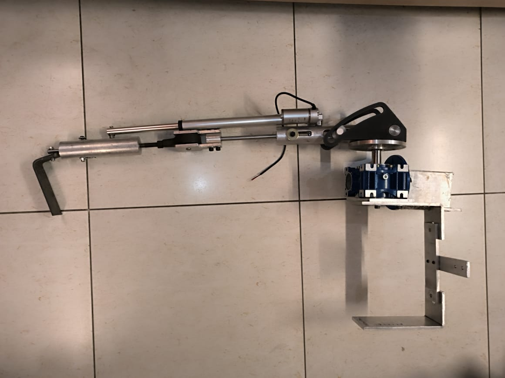

Work / P.04 · Case study
Medical Exoskeleton
A lower-limb exoskeleton sized to a 78 kg user and a 150 Nm swing torque, then built. The decision that got it built was giving up on fabricating the gearbox.
- Context
- Final-year capstone project — B.Eng. Mechanical Engineering, Thapar Institute of Engineering & Technology, Patiala
- Date
- Session 2022–23 · submitted May 2023
- Team
- Five-member capstone team under two faculty supervisors. My role: team lead
- My scope
- Load calculations, component sizing, material selection and fabrication
- Tools
- Onshape (CAD) · FEA · conventional machining — turning, milling, drilling
The requirement
Lower-limb exoskeletons exist and work; the ones that reach patients are expensive, heavy and difficult to wear for long stretches. Cost is not a side issue — for most users in India it is the reason the device is not an option at all. So the requirement was framed against those three failure modes: assist standing and walking, stay light enough to wear, and cost little enough to be reachable, while adjusting to different body sizes.
Written as design constraints: the device must not add significant weight to the user, must not cause discomfort over long wear, must be stiff enough to carry the load safely, must adjust for different waist widths and leg lengths, and must fail safe. A user survey established the willingness-to-pay bands that made low cost a hard requirement rather than a preference.
Approach
The load path was closed before any geometry was drawn. A free-body diagram of the leg-plus-device system defines the terms — segment lengths hip-to-knee, knee-to-ankle and foot; masses of the limb segments, of the device attached to each segment, and of the casings; and torques at hip, knee and ankle. From there the sizing case is explicit:
- Design case. Maximum user mass 78 kg; maximum torque during leg swing 150 Nm — the worst case the joint has to hold.
- Power transmission. Worm-gear drive sized at a 25:1 ratio, giving 188.5 Nm output from a 65 Nm input, with bending and torsional moments resolved at the shafts.
- Material and margin. Aluminium 6061 for the frame — light, available, cheaper than the higher grades — at 110 MPa yield, with a factor of safety of 4 taken from medical-device practice. 304 stainless steel for the shafts.
- Then FEA. Eight load-carrying parts analysed for von Mises stress and displacement: thigh shaft, worm shaft, worm gear, connecting plate, cam plates, cam bearing, gearbox casing, and the pin holding the actuator.
CAD was built in Onshape as components, then as an assembly, then refined against fit and function. Four iterations changed the design in ways that matter more than the analysis did:
- Back support and bracing straps added, once it was clear the waist interface alone could not hold the device stable on a moving user.
- Yaw extension at the thigh–calf connection to absorb length adjustment for different user heights, and — the real reason — to prevent hyperflexion at the lower-limb joints.
- Knee joint reworked around the revised load path.
- Power transmission: make → buy. Fabricating a case for the worm gear and sourcing a 20:1 worm set was cumbersome and inefficient in the time available, so an off-the-shelf NMRV050 gearbox was fitted instead. This is the decision that turned a design into a prototype.

Result
A working prototype, delivered at roughly €300 in materials and bought-in parts, fully reimbursed by the institute. Testing was done in a controlled setting for safety: gait support assessed on a treadmill with the gait cycle examined for correct assistance, stability calibrated to the user's centre of gravity, and usability judged on how easily the device could be put on and adjusted. It supported the user in standing and walking, stayed stable with no falls, and was reported comfortable to wear.
The FEA results are worth stating precisely, because they say something the report did not draw out:
| Component | Peak von Mises | Max displacement |
|---|---|---|
| Worm shaft (motor torque) | 10.7 MPa | — |
| Worm gear | 10.5 MPa | — |
| Thigh shaft (torque + downward load) | 10.0 MPa | — |
| Knee case | — | 0.30 mm |
| Actuator pin | — | 0.30 mm |
| Connecting plate / gearbox casing | — | 0.063 mm |
| Cam plates | — | 0.010 mm |
What I'd do differently
- Spend the safety margin on weight. Ten times the required margin means sections can come down or pockets can go in. On a device where the leading complaint about the whole product category is bulk, converting unused strength into lower mass is the highest-value redesign available — and the FEA to justify it already exists.
- Re-close the torque chain on the gearbox actually fitted. The transmission was sized at 25:1 and the device was built around a 20:1 unit. The prototype worked, but the delivered ratio is not the ratio the calculations assume, so the sizing case and the built article have drifted apart. Recomputing the chain for the fitted gearbox — and stating the resulting joint torque — is a half-day of work that would make every downstream number honest.
- Instrument the testing. "Supported the user, stayed stable, was comfortable" is a qualitative result from a single user. Joint-angle traces, assistive torque over the gait cycle, and time-to-don measured across several users would turn the prototype test into evidence — and would tell us whether the assistance arrives at the right point in the cycle or merely arrives.
- Close the actuation and power budget. The mechanical path is sized; battery life was written down as a constraint and never resolved into a number. For a device meant to be worn through a day, runtime is a requirement, not an afterthought.